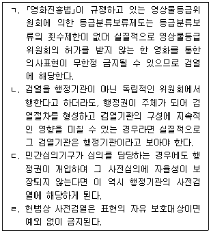
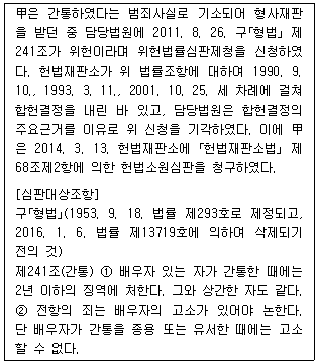

PSAT-헌법 (2021-03-06 기출문제)
1. 헌법전문(前文)에 대한 설명으로 옳지 않은 것은? (다툼이 있는 경우 판례에 의함)
- 우리 헌법은 전문에서 모든 사회적 폐습과 불의를 타파한다고 규정하고 있다.
- '헌법전문에 기재된 3.1정신'은 우리나라 헌법의 연혁적ㆍ이념적 기초로서 헌법이나 법률해석에서의 해석기준으로 작용한다고 할 수 있지만, 그에 기하여 곧바로 국민의 개별적 기본권성을 도출해낼 수는 없다.
- 국가는 일제로부터 조국의 자주독립을 위하여 공헌한 독립유공자와 그 유족에 대하여 응분의 예우를 하여야 할 법률상의 의무를 지닐 뿐 헌법적 의무를 지닌다고 보기는 어렵다.
- 일제강점기에 일본군위안부로 강제 동원되어 인간의 존엄과 가치가 말살된 상태에서 장기간 비극적인 삶을 영위하였던 피해자들의 훼손된 인간의 존엄과 가치를 회복시켜야 할 의무는 대한민국임시정부의 법통을 계승한 지금의 정부가 국민에 대하여 부담하는 가장 근본적인 보호의무에 속한다.
(정답률: 60%)

2. 형사보상청구권에 대한 설명으로 옳은 것은?
- 보상청구는 무죄재판을 한 법원의 상급법원에 대하여 하여야 한다.
- 보상을 청구하는 경우에는 국가배상을 청구할 수 없다.
- 보상청구는 무죄재판이 확정된 사실을 안 날부터 3년, 무죄재판이 확정된 때부터 5년 이내에 하여야 한다.
- 보상청구는 대리인을 통하여 할 수 없다.
(정답률: 45%)
3. 법인의 기본권 주체성에 대한 설명으로 옳지 않은 것은? (다툼이 있는 경우 판례에 의함)
- 본래 자연인에게 적용되는 기본권 규정이라도 성질상 법인이 누릴 수 있는 기본권은 당연히 법인에게도 적용하여야 한다.
- 법인도 법인의 목적과 사회적 기능에 비추어 볼 때 그 성질에 반하지 않는 범위 내에서 인격권의 한 내용인 사회적 신용이나 명예 등의 주체가 될 수 있다.
- 국립서울대학교는 공권력 행사의 주체인 공법인으로서 기본권의 '수범자'이므로 기본권의 주체가 될 수는 없다.
- 법인 아닌 사단ㆍ재단이라고 하더라도 대표자의 정함이 있고 독립된 사회적 조직체로서 활동하는 때에는 성질상 법인이 누릴 수 있는 기본권을 침해당하게 되면 법인 아닌 사단ㆍ재단의 이름으로 헌법소원심판을 청구할 수 있다.
(정답률: 72%)
4. 헌법상 금지되는 사전검열에 대한 설명으로 옳은 것만을 모두 고르면? (다툼이 있는 경우 판례에 의함)

- ㄱ, ㄴ
- ㄱ, ㄷ, ㄹ
- ㄴ, ㄷ, ㄹ
- ㄱ, ㄴ, ㄷ, ㄹ
(정답률: 33%)
5. 신체의 자유에 대한 설명으로 옳지 않은 것은? (다툼이 있는 경우 판례에 의함)
- 검찰수사관이 정당한 사유없이 피의자신문에 참여한 변호인에게 피의자 후방에 앉으라고 요구한 행위는 변호인의 변호권을 침해하는 것이다.
- 외국에서 실제로 형의 집행을 받았음에도 불구하고 우리 형법에 의한 처벌 시 이를 전혀 고려하지 않더라도 과도한 제한이라고 할 수 없으므로 신체의 자유를 침해하지 아니한다.
- 현행범인인 경우와 장기 3년 이상의 형에 해당하는 죄를 범하고 도피 또는 증거인멸의 염려가 있을 때에는 사후에 영장을 청구할 수 있다.
- 헌법 제12조제4항 본문에 규정된 '구속'은 사법절차에서 이루어진 구속뿐 아니라, 행정절차에서 이루어진 구속까지 포함한다.
(정답률: 61%)
6. 기본권 보호의무에 대한 설명으로 옳지 않은 것은? (다툼이 있는 경우 판례에 의함)
- 국가의 기본권 보호의무는 기본권적 법익을 기본권 주체인 사인에 의한 위법한 침해 또는 침해의 위험으로부터 보호해야 하는 국가의 의무로서 주로 사인인 제3자에 의한 개인의 생명이나 신체의 훼손에서 문제된다.
- 국가가 기본권 보호의무를 어떻게 실현할 것인지는 입법자의 책임범위에 속하는 것으로서 보호의무 이행을 위한 행위의 형식에 관하여도 폭넓은 형성의 자유가 인정되고, 반드시 법령에 의하여야 하는 것은 아니다.
- ｢공직선거법｣이 선거운동을 위해 확성장치를 사용할 수 있는 기간과 장소, 시간, 사용 개수 등을 규정하고 있는 이상, 확성장치의 소음 규제기준을 정하지 않았다고 하여 기본권 보호의무를 과소하게 이행하였다고 볼 수는 없다.
- 국가가 국민의 법익을 보호하기 위하여 아무런 보호조치를 취하지 않았든지 아니면 취한 조치가 법익을 보호하기에 명백하게 부적합하거나 불충분한 경우에 한하여 국가의 보호의무의 위반을 확인할 수 있다.
(정답률: 35%)
7. 보건에 관한 권리에 대한 설명으로 옳지 않은 것은? (다툼이 있는 경우 판례에 의함)
- 모든 국민은 보건에 관하여 국가의 보호를 받는다.
- 국가는 국민의 건강을 소극적으로 침해하여서는 아니 될 의무를 부담하는 것에서 한 걸음 더 나아가 적극적으로 국민의 보건을 위한 정책을 수립하고 시행하여야 할 의무를 부담한다.
- 헌법 제10조, 제36조제3항에 따라 국가는 국민의 생명⋅신체의 안전이 위협받거나 받게 될 우려가 있는 경우 국민의 생명⋅신체의 안전을 보호하기에 필요한 적절하고 효율적인 조치를 취하여 그 침해의 위험을 방지하고 이를 유지할 포괄적 의무를 진다.
- 국민의 보건에 관한 권리는 국민이 자신의 건강을 유지하는데 필요한 국가적 급부와 배려까지 요구할 수 있는 권리를 포함하는 것은 아니다.
(정답률: 31%)
8. 개인정보자기결정권에 대한 설명으로 옳지 않은 것은? (다툼이 있는 경우 판례에 의함)
- 헌법재판소는 수사를 위하여 필요한 경우 검사 또는 사법경찰관이 전기통신사업자에게 기지국을 이용하여 착ㆍ발신한 전화번호 등의 통신사실 확인자료의 제공을 요청할 수 있도록 하는 ｢통신비밀보호법｣ 제13조제1항이 과잉금지원칙에 위반되어 정보주체의 개인정보자기결정권을 침해한다고 판시하였다.
- '각급학교 교원의 교원단체 및 교원노조 가입현황 실명자료'를 인터넷을 통하여 일반 대중에게 공개하는 국회의원의 행위는 해당 교원들의 개인정보자기결정권을 침해한다.
- 개인정보자기결정권은 자신에 관한 정보가 언제 누구에게 어느 범위까지 알려지고 또 이용되도록 할 것인지를 그 정보주체가 스스로 결정할 수 있는 권리로서, 헌법 제10조제1문에서 도출되는 일반적 인격권 및 헌법 제17조의 사생활의 비밀과 자유에 의하여 보장된다.
- 수형인등이 재범하지 않고 상당 기간을 경과하는 경우에는 재범의 위험성이 그만큼 줄어든다고 할 것임에도 일률적으로 이들 대상자가 사망할 때까지 디엔에이신원확인정보를 보관하는 것은 과잉금지원칙에 위반하여 수형인등의 개인정보자기결정권을 침해한다.
(정답률: 32%)
9. 대통령에 대한 설명으로 옳지 않은 것은?
- 대통령은 필요하다고 인정할 때에는 국회의 동의를 얻어 외교ㆍ국방ㆍ통일 기타 국가안위에 관한 중요정책을 국민투표에 붙인다.
- 대통령이 재직 중 탄핵결정을 받아 퇴임한 경우 '필요한 기간의 경호 및 경비'를 제외하고는 ｢전직대통령 예우에 관한 법률｣에 따른 전직대통령으로서의 예우를 하지 아니한다.
- 대통령은 조약을 체결ㆍ비준하고, 외교사절을 신임ㆍ접수 또는 파견하며, 선전포고와 강화를 한다.
- 대통령은 조국의 평화적 통일을 위한 성실한 의무를 지며, 이에 대해 취임에 즈음하여 선서한다.
(정답률: 27%)
10. 행정부에 대한 설명으로 옳지 않은 것은? (다툼이 있는 경우 판례에 의함)
- 감사원장은 국회의 동의를 얻어 대통령이 임명하고, 그 임기는 4년으로 하며, 1차에 한하여 중임할 수 있다.
- ｢정부조직법｣상 정부의 구성단위로서 그 권한에 속하는 사항을 집행하는 모든 중앙행정기관이 곧 헌법 제86조제2항 소정의 행정각부라고 할 것이다.
- 국가안전보장에 관련되는 대외정책ㆍ군사정책과 국내정책의 수립에 관하여 국무회의의 심의에 앞서 대통령의 자문에 응하기 위하여 국가안전보장회의를 둔다.
- 군인은 현역을 면한 후가 아니면 국무위원으로 임명될 수 없다.
(정답률: 40%)
11. 국무총리에 대한 설명으로 옳지 않은 것은?
- 국무총리는 국무회의의 부의장이 된다.
- 국무총리가 탄핵결정을 받은 때에는 공직으로부터 파면함에 그치지만, 이에 의하여 민사상이나 형사상의 책임이 면제되지는 아니한다.
- 국무총리는 중앙행정기관의 장의 명령이나 처분이 위법 또는 부당하다고 인정될 경우에는 대통령의 승인을 받지 않고 이를 중지 또는 취소할 수 있다.
- 국무총리는 국회의 동의를 얻어 대통령이 임명하며, 행정에 관하여 대통령의 명을 받아 행정각부를 통할한다.
(정답률: 57%)
12. 다음 사례에 대한 설명으로 옳지 않은 것은? (다툼이 있는 경우 판례에 의함)

- 위 사례에서 심판대상조항에 대하여 위헌결정을 선고하는 경우, 침해되는 甲의 기본권은 성적 자기결정권 및 사생활의 비밀과 자유이다.
- 위 사례에서 위헌결정이 선고되는 경우 결정 선고 이전에 심판대상조항에 의하여 유죄의 확정판결을 받은 사람들은 당연히 구제되는 것은 아니고 법원에 개별적으로 재심을 청구하여야 한다.
- 위 사례에서 헌법재판관들의 의견이 위헌 3인, 헌법불합치 4인, 합헌 2인으로 나뉘는 경우 헌법재판소는 심판대상조항의 헌법불합치를 주문에서 선고하여야 한다.
- 위 사례에서 심판대상조항에 대하여 위헌결정을 선고하는 경우, 이는 형벌조항에 대한 위헌결정이므로 예외적으로 심판대상조항은 제정된 때로 소급하여 효력을 상실하게 된다.
(정답률: 34%)
13. 국무회의에 대한 설명으로 옳지 않은 것은?
- 의장과 부의장이 모두 사고로 직무를 수행할 수 없는 경우에는 기획재정부장관이 겸임하는 부총리, 교육부장관이 겸임하는 부총리 및 ｢정부조직법｣ 제26조제1항에 규정된 순서에 따라 국무위원이 그 직무를 대행한다.
- 국무위원은 정무직으로 하며 의장에게 의안을 제출할 수 있으나, 국무회의의 소집을 요구할 수는 없다.
- 국무회의는 대통령ㆍ국무총리와 15인 이상 30인 이하의 국무위원으로 구성한다.
- 국정처리상황의 평가ㆍ분석은 국무회의의 심의를 거쳐야 한다.
(정답률: 57%)
14. 권한쟁의심판에 대한 설명으로 옳은 것은? (다툼이 있는 경우 판례에 의함)
- ｢헌법재판소법｣ 제62조제1항제1호가 국가기관 상호간의 권한쟁의심판을 '국회, 정부, 법원 및 중앙선거관리위원회 상호간의 권한쟁의심판'이라고 규정하고 있으므로, 이들 기관 외에는 권한쟁의심판의 당사자가 될 수 없다.
- 정당은 공권력 행사 주체로서 국가기관의 지위를 가지므로 권한쟁의심판의 당사자가 될 수 있다.
- 교섭단체가 갖는 권한은 원활한 국회 의사진행을 위하여 헌법이 인정하는 권한이므로, 교섭단체는 그 권한침해를 이유로 권한쟁의심판의 당사자가 될 수 있다.
- 권한쟁의심판은 피청구인의 처분 또는 부작위가 헌법 또는 법률에 의하여 부여받은 청구인의 권한을 침해하였거나 침해할 현저한 위험이 있는 경우에만 청구할 수 있다.
(정답률: 24%)
15. 법원에 대한 설명으로 옳지 않은 것은?
- 재판의 심리와 판결은 국가의 안전보장 또는 안녕질서를 방해하거나 선량한 풍속을 해할 염려가 있을 때에는 법원의 결정으로 공개하지 아니할 수 있다.
- 법관이 중대한 심신상의 장해로 직무를 수행할 수 없을 때에는 법률이 정하는 바에 의하여 퇴직하게 할 수 있다.
- 군사법원의 상고심은 대법원에서 관할한다.
- 대법원장과 대법관이 아닌 법관은 대법관회의의 동의를 얻어 대법원장이 임명한다.
(정답률: 35%)
16. 선거관리위원회에 대한 설명으로 옳지 않은 것은?
- 중앙선거관리위원회 위원의 임기는 6년으로 하며, 법률이 정하는 바에 의하여 연임할 수 있다.
- 중앙선거관리위원회는 대통령이 임명하는 3인, 국회에서 선출하는 3인과 대법원장이 지명하는 3인의 위원으로 구성하며, 위원장은 위원 중에서 호선한다.
- 중앙선거관리위원회 위원은 정당에 가입하거나 정치에 관여할 수 없다.
- 선거에 관한 경비는 법률이 정하는 경우를 제외하고는 정당 또는 후보자에게 부담시킬 수 없다.
(정답률: 39%)
17. 국회의 안건의 신속처리에 대한 설명으로 옳은 것은?
- 신속처리안건에 대한 지정동의가 소관 위원회 위원장에게 제출된 경우 안건의 소관 위원회 위원장은 지체 없이 신속처리안건 지정동의를 기명투표로 표결한다.
- 소관 위원회는 원칙적으로 신속처리대상안건에 대한 심사를 그 지정일부터 90일 이내에 마쳐야 한다.
- 법제사법위원회가 신속처리대상안건에 대하여 그 지정일부터 60일 이내에 심사를 마치지 아니하였을 때에는 그 기간이 끝난 다음 날에 법제사법위원회에서 심사를 마치고 바로 본회의에 부의된 것으로 본다.
- 신속처리대상안건을 심사하는 안건조정위원회는 그 안건이 관련 규정에 따라 법제사법위원회에 회부되거나 바로 본회의에 부의된 것으로 보는 경우에는 안건조정위원회의 활동기한이 남았더라도 그 활동을 종료한다.
(정답률: 32%)
18. 국회에 대한 설명으로 옳지 않은 것은?
- 국회는 정부의 동의없이 정부가 제출한 지출예산 각항의 금액을 증가하거나 새 비목을 설치할 수 없다.
- 국회의원의 자격심사 청구, 예산안에 대한 수정동의는 각각 의원 50명 이상의 찬성이 있어야 한다.
- 국회의원이 본회의에 부의된 안건에 대하여 '무제한토론'을 하려는 경우에는 재적의원 3분의 1 이상이 서명한 요구서를 의장에게 제출하여야 한다.
- 국회의 경호업무는 의장의 지휘를 받아 수행하되, 경위는 회의장 건물 안에서, 경찰공무원은 회의장 건물 밖에서 경호한다.
(정답률: 49%)
19. 국회의 위원회에 대한 설명으로 옳은 것은?
- 정보위원회의 위원은 의장이 각 교섭단체 대표의원으로부터 해당 교섭단체 소속 의원 중에서 후보를 추천받아 부의장 및 각 교섭단체 대표의원과 협의하여 선임하거나 개선하며, 각 교섭단체 대표의원은 정보위원회의 위원이 된다.
- 예산결산특별위원회와 윤리특별위원회는 활동기한을 정해서 그 기한의 종료 시까지만 존속한다.
- 정무위원회는 대통령비서실과 국무총리비서실의 소관사항을 관장한다.
- 소위원회는 폐회 중에는 활동할 수 없으며, 법률안을 심사하는 소위원회는 매월 2회 이상 개회한다.
(정답률: 39%)
20. 국회의원선거에 대한 설명으로 옳지 않은 것은?
- 국회의원선거구획정위원회는 중앙선거관리위원회 위원장이 위촉하는 9명의 위원으로 구성하되, 위원장은 위원 중에서 호선한다.
- 국회는 국회의원지역구를 선거일 전 180일까지 확정하여야 한다.
- 국회의원의 임기가 개시된 후에 실시하는 보궐선거에 의한 의원의 임기는 당선이 결정된 때부터 개시되며 전임자의 잔임기간으로 한다.
- 선거일 현재 금고 이상의 형의 선고를 받고 그 형이 실효되지 아니한 자는 피선거권이 없다.
(정답률: 31%)
21. 탄핵심판에 대한 설명으로 옳은 것은?
- 탄핵의 대상이 되는 공직자는 대통령, 국무총리, 국무위원, 행정각부의 장, 헌법재판소 재판관, 법관, 중앙선거관리위원회 위원, 감사원장, 감사위원 기타 법률이 정한 공무원이다.
- 대통령에 대한 탄핵소추는 국회재적의원 3분의 1 이상의 발의와 국회재적의원 과반수의 찬성에 의한 의결로 이루어지고, 탄핵의 결정에는 헌법재판소 재판관 6인 이상의 찬성이 있어야 한다.
- 탄핵심판이 있을 때까지 탄핵소추의 의결을 받은 자의 권한행사가 정지되는지 여부에 대하여 헌법상 명문으로 규정하고 있지 않다.
- 탄핵심판은 고위공직자에 의한 헌법침해로부터 헌법을 보호하기 위한 헌법재판제도로서, 제5차 개정헌법에서 최초 도입된 이래로 존속되어 온 제도이다.
(정답률: 38%)
22. 사법권의 독립에 대한 설명으로 옳지 않은 것은? (다툼이 있는 경우 판례에 의함)
- 명령ㆍ규칙 또는 처분이 헌법이나 법률에 위반되는 여부가 재판의 전제가 된 경우에는 대법원은 이를 최종적으로 심사할 권한을 가진다.
- 국정감사 또는 국정조사는 계속 중인 재판에 관여할 목적으로 행사되어서는 아니된다.
- 대법원장은 다른 국가기관으로부터 법관의 파견근무 요청을 받은 경우에 업무의 성질상 법관을 파견하는 것이 타당하다고 인정되면 해당 법관이 파견근무에 동의하지 않는 경우에도 이를 허가할 수 있다.
- 형사재판에 있어서 사법권독립은 심판기관인 법원과 소추기관인 검찰청의 분리를 요구함과 동시에 법관이 실제 재판에 있어서 소송당사자인 검사와 피고인으로부터 부당한 간섭을 받지 않은 채 독립하여야 할 것을 요구한다.
(정답률: 56%)
23. 지방자치에 대한 설명으로 옳지 않은 것은? (다툼이 있는 경우 판례에 의함)
- 지방자치단체는 주민의 복리에 관한 사무를 처리하고 재산을 관리하며, 법령의 범위안에서 자치에 관한 규정을 제정할 수 있다.
- 헌법 제117조와 제118조에 의하여 제도적으로 보장되는 지방자치는 지방자치의 본질적 내용인 핵심영역이 어떠한 경우라도 입법 기타 중앙정부의 침해로부터 보호되어야 한다는 것을 의미한다.
- 주민투표권은 법률이 보장하는 권리일 뿐이지 헌법이 보장하는 기본권 또는 헌법상 제도적으로 보장되는 주관적 공권으로 볼 수 없다.
- 지방자치단체의 자치권이 미치는 관할구역의 범위에는 육지만 포함되므로, 공유수면에 대해서는 지방자치단체의 자치권한이 존재하지 않는다.
(정답률: 47%)
24. 대의제도에 대한 설명으로 옳은 것은? (다툼이 있는 경우 판례에 의함)
- 국회의원이 계속 특정 상임위원회에서 활동하기를 원하고 있다면 그 위원회와 관련하여 위법하거나 부당한 행위를 한 사실이 인정되는 경우가 아닌 한 본인의 의사에 반하여 강제로 위원회에서 사임시킬 수는 없다.
- 국민의 국회의원 선거권은 국회의원을 보통ㆍ평등ㆍ직접ㆍ비밀선거에 의하여 국민의 대표자로 선출하는 권리에 그치는 것이기 때문에 유권자가 설정한 국회의석분포에 국회의원들을 기속시키는 것은 대의제도의 본질에 반하는 것이다.
- 대의제를 보완하는 직접민주주의 요소로서 우리 헌법은 국민투표만을 규정하였을 뿐 우리 헌정사상 국민발안제나 국민소환제를 채택한 적은 없다.
- 국민과 국회의원은 자유위임관계에 있는 것이 아니라 명령적 위임관계에 있다.
(정답률: 38%)
25. 경제조항에 대한 설명으로 옳지 않은 것은?
- 국가는 농지에 관하여 경자유전의 원칙이 달성될 수 있도록 노력하여야 하며, 농지의 소작제도는 금지된다.
- 국가는 건전한 소비행위를 계도하고 생산품의 품질향상을 촉구하기 위한 소비자보호운동을 법률이 정하는 바에 의하여 보장한다.
- 국가는 지역간의 균형있는 발전을 위하여 지역경제를 육성할 의무를 지나, 중소기업을 보호ㆍ육성하여야 할 의무를 지지 아니한다.
- 국가는 농수산물의 수급균형과 유통구조의 개선에 노력하여 가격안정을 도모함으로써 농ㆍ어민의 이익을 보호한다.
(정답률: 60%)